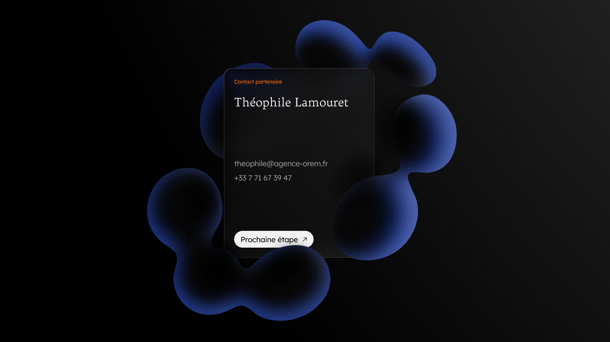
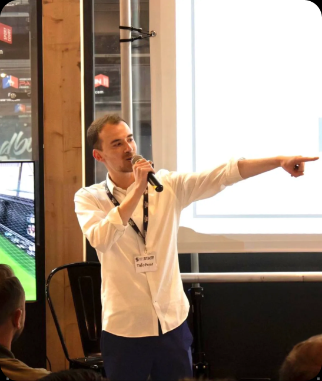
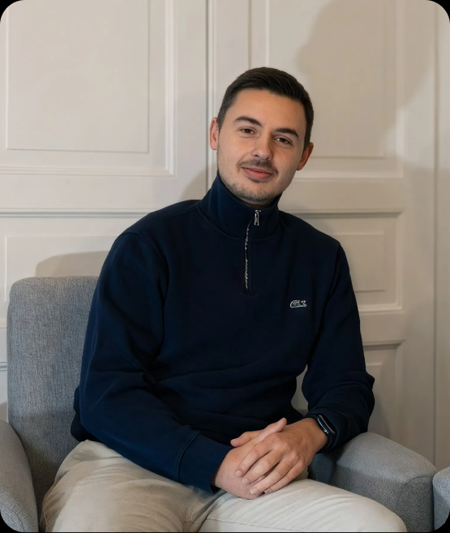

Sundis × Orem
Octobre 2026
Proposition d’accompagnement · Refonte du site Sundis
Structurer une image plus juste de Sundis et un site pensé pour les professionnels
La décision en une page
Synthèse exécutive
Le problème
Le site ne reflète ni le niveau réel de Sundis, ni son outil industriel, ni la solidité de son positionnement. Discours générique, contenus obsolètes, crédibilité fragilisée à l’international.
Notre recommandation
Recentrer l’image et le discours sur les professionnels, puis refondre le site vitrine pour rassurer, orienter et générer des prises de contact qualifiées.
Ce que ça change
Pas un simple nouveau site : un outil mesurable, qui améliore la qualité des prises de contact, l’engagement des visiteurs et l’exploitation du trafic international.
Le choix à faire
Brique 1 · Option 2 Brand Kit Structuré
+ Brique 2 · Refonte du site vitrine Webflow
+ pilotage par KPI dès la mise en ligne
Investissement recommandé
8 667 € HT
Au lieu de 9 630 € HT : remise de synergie de 10 % incluse.
Ce que nous avons observé
À l’issue de nos échanges, plusieurs constats ressortent clairement.
Constat 01
Une image en décalage avec la réalité de l’entreprise
Sundis dispose d’un vrai socle industriel, d’un savoir-faire reconnu, d’une fabrication française et d’une démarche RSE structurée.
Pourtant, le site actuel ne transmet pas suffisamment cette solidité. L’image perçue reste aujourd’hui en dessous du niveau réel de l’entreprise.
Le site donne des informations, mais il ne valorise pas encore assez ce qui rassure un interlocuteur professionnel : la capacité industrielle, la maîtrise, la fiabilité, la structuration de l’offre.
Constat 02
Un discours encore trop peu orienté B2B
Le cœur de cible de Sundis reste constitué de professionnels, en particulier des distributeurs et des acheteurs.
Or, le message du site ne parle pas encore suffisamment leurs enjeux concrets : régularité, capacité de production, conformité, délais, qualité d’exécution, engagement RSE.
Le site a aujourd’hui davantage une posture de présentation générale qu’une posture de réassurance commerciale.
Ce que nous avons observé
Autrement dit : le site existe, mais il n’est pas encore pleinement exploité comme un levier commercial, de marque et de recrutement.
Constat 03
Une structure digitale qui manque de lisibilité
L’écosystème actuel repose sur plusieurs environnements distincts :
- un site vitrine,
- un e-shop,
- et, à terme, un portail professionnel.
Cette organisation peut avoir du sens dans certains cas, mais elle nécessite une hiérarchie claire entre les usages, les cibles et les points d’entrée.
À date, cette lecture n’est pas encore suffisamment évidente.
Constat 04
Des freins concrets de crédibilité et de performance
Plusieurs signaux peuvent aujourd’hui freiner l’efficacité du site :
- contenus partiellement obsolètes,
- informations hétérogènes selon les pages,
- logique de traduction non finalisée,
- expérience mobile et fluidité perfectibles,
- pilotage encore incomplet des conversions et des usages.
5 priorités pour le futur site
Notre recommandation · 1/2
Priorité 01
Recentrer le message sur les professionnels
Le futur site doit adopter un discours clairement orienté B2B. Cela implique :
- un vocabulaire plus directement relié aux attentes des acheteurs,
- une valorisation explicite du savoir-faire industriel,
- une mise en avant plus claire de la fabrication française et des engagements RSE,
- une réassurance plus visible dès les premiers écrans.
L’objectif n’est pas de “parler à tout le monde”, mais de parler correctement à la cible prioritaire.
Priorité 02
Simplifier la navigation pour mieux orienter
Le site doit permettre à un visiteur professionnel de comprendre rapidement qui est Sundis, ce que l’entreprise fabrique, pourquoi elle est crédible, et comment entrer en contact.
Nous recommandons une structure resserrée, plus fluide, avec :
- un menu simplifié,
- une hiérarchie plus lisible,
- un CTA principal unique,
- une logique de navigation pensée pour la lecture commerciale.
Priorité 03
Renforcer la crédibilité par les contenus
Le futur site doit mieux refléter la réalité de l’entreprise à travers ses contenus. Cela passe notamment par :
- une vraie page de présentation de Sundis,
- des pages familles de produits et références plus crédibles et mieux structurées,
- une valorisation claire des engagements,
- un espace carrière plus attractif et mieux conçu.
5 priorités pour le futur site
Notre recommandation · 2/2
Priorité 04
Faire du site un vrai outil de prise de contact
Le site doit aussi mieux convertir. Nous recommandons pour cela :
- un CTA principal unique : Parler à un conseiller commercial,
- une page contact plus utile,
- une prise de rendez-vous directe en visio,
- des demandes ciblées par famille de produits,
- et une structuration plus propre des informations collectées.
Priorité 05
Poser une base saine pour l’international et le pilotage
Enfin, le site doit permettre à Sundis de mieux exploiter son exposition, notamment à l’export. Cela implique :
- de vraies versions anglaise et espagnole,
- une architecture plus propre pour le référencement,
- une configuration complète de GA4, Search Console et Tag Manager,
- et une logique de suivi centrée sur les conversions réelles.
Finalité
Un outil mesurable, pas un simple nouveau site
Ce projet n’a pas vocation à simplement refondre le site, mais à créer un outil capable d’améliorer :
- la qualité des prises de contact,
- l’engagement des visiteurs,
- l’exploitation du trafic international.
Brique 1 · Image / direction artistique
Trois options, un arbitrage
La refonte du site peut être engagée seule. Mais la qualité du rendu final dépend fortement de la clarté du socle de marque sur lequel il repose.
Critère
Option 1
Identité Essentielle
Option 2 · Recommandée
Brand Kit Structuré
Option 3
Système de Marque Premium
Niveau de structuration
Socle essentiel
Charte complète et déclinable
Système de marque étendu
Livrables clés
Moodboard, couleurs, typographie, logo
+ direction stratégique, base éditoriale, 8 à 10 applications
+ public brand kit, UI kit, illustrations
Usage conseillé
Remise à niveau simple
Refonte du site + cohérence de marque
Déploiement multi-supports et multi-équipes
Pertinence pour Sundis
Limitée
Recommandée
Ambitieuse, au-delà du site
Risque
Un site plus propre, mais pas plus cohérent
Équilibre visé
Un périmètre plus large que le besoin actuel
Investissement
1 490 € HT
3 490 € HT
6 990 € HT
Avec la Brique 2, remise incluse
7 248 € HT
8 667 € HT
11 160 € HT
Le contenu de chaque option
Brique 1 · Image / direction artistique
Option 1
Identité Essentielle
- Un moodboard de référence
- Une base couleur structurée
- Une base typographique
- Un socle iconographique simple
- Des principes de composition web
- Un socle logo / variantes essentielles
1 490 € HT
Option 2 · Recommandée
Brand Kit Structuré
- Un moodboard plus détaillé
- Une direction stratégique synchronisée avec le positionnement
- Une base éditoriale
- Une palette structurée
- Une hiérarchie typographique complète
- Des règles de composition
- Une iconographie définie
- Des objets de style
- Un logo et ses déclinaisons
- 8 à 10 applications visuelles
3 490 € HT
Option 3
Système de Marque Premium
- Une architecture de marque plus complète
- Une direction éditoriale approfondie
- Un système typographique plus riche
- Des règles avancées de composition
- Une iconographie plus développée
- Des éléments d’illustration
- Un public brand kit
- Un UI kit
- Et davantage d’applications
6 990 € HT
Brique 1 · Option 2 · Recommandée
Pourquoi le Brand Kit Structuré
L’option 2 offre à Sundis le meilleur équilibre entre niveau de structuration, cohérence de marque et maîtrise de l’investissement.
3 490 € HT
Ce qu’elle apporte
Une charte claire, déclinable et utilisable dans le temps
Pour le site comme pour les futurs supports, avec un niveau de structuration cohérent avec les enjeux du projet :
- clarifier l’image,
- mieux refléter le positionnement,
- fournir une base exploitable par plusieurs interlocuteurs,
- et sécuriser la cohérence globale du site.
Notre lecture
C’est le bon niveau pour ne pas sous-traiter l’image du site tout en restant dans un cadre raisonnable.
Pourquoi pas moins
Option 1 : insuffisante pour l’enjeu
Elle remet à niveau les fondamentaux, mais ne structure ni le positionnement, ni la base éditoriale. Le site gagnerait en propreté visuelle sans gagner en cohérence de marque, alors que c’est précisément le décalage identifié chez Sundis.
Pourquoi pas plus
Option 3 : surdimensionnée aujourd’hui
Elle répond à un besoin de déploiement large : plusieurs équipes, plusieurs prestataires, de nombreux supports. Ce n’est pas l’enjeu prioritaire de Sundis à date. Elle reste une suite logique, activable plus tard sur la base du Brand Kit.
Brique 2
Refonte du site vitrine Webflow
Webflow concilie qualité d’exécution, liberté de design, autonomie côté client et capacité d’évolution dans le temps.
Investissement du site vitrine
6 140 € HT
01 · Socle du site vitrine
Poser une base claire, administrable et durable
Page d’accueil, page “Nos produits” (vos 5 familles et l’accès au catalogue), mentions légales, page 404, formation à la prise en main, 2 mois d’accompagnement post-lancement.
02 · Pages standards
Rassurer, expliquer, crédibiliser
Histoire, Savoir-faire, Engagements RSE, Pourquoi nous rejoindre, Contact avec prise de rendez-vous.
03 · Collections CMS
Présenter l’offre par familles et faciliter les évolutions
Catégories et Offres d’emploi : une page par famille de produits, avec un lien direct vers votre catalogue. Sundis fait évoluer le site plus facilement, à moindre coût, sans reconstruire la structure à chaque ajout.
04 · International
Rendre le trafic étranger enfin exploitable
Intégration des versions anglaise et espagnole, sur une architecture propre pour le référencement.
5 %
avec l’option 1 · Identité Essentielle
10 %
avec l’option 2 · Brand Kit Structuré
15 %
avec l’option 3 · Système de Marque Premium
Pourquoi une remise
Ce n’est pas un geste commercial. Engagées ensemble, les deux briques partagent un seul cadrage, un seul système graphique et un seul circuit de validation. Le projet est plus cohérent, donc plus efficace à produire : la remise répercute ce gain.
Articulation entre les deux briques
Deux prestations distinctes, un projet plus fort lorsqu’elles sont pensées ensemble.
- la direction artistique donne au site sa cohérence,
- le site donne à la direction artistique son terrain d’expression,
- et les deux, ensemble, permettent un rendu plus juste, plus lisible et plus crédible.
Investissement
Scénarios financiers
Remise de synergie appliquée lorsque les deux briques sont engagées ensemble. La Brique 2 est au même prix dans les trois scénarios : 6 140 € HT.
Ligne
Option 1
Option 2 · Recommandée
Option 3
Brique 2 · Site vitrine Webflow
6 140 € HT
6 140 € HT
6 140 € HT
Brique 1 · Image
Identité Essentielle
1 490 € HT
Brand Kit Structuré
3 490 € HT
Système de Marque Premium
6 990 € HT
Total brut
7 630 € HT
9 630 € HT
13 130 € HT
Remise de synergie
5 % · -382 €
10 % · -963 €
15 % · -1 970 €
Total facturé
7 248 € HT
8 667 € HT
11 160 € HT
Mesurer ce qui compte vraiment
Pilotage · Indicateurs suivis dès la mise en ligne
KPI 01
KPI de conversion
Ces KPI permettent de mesurer si le site génère réellement plus d’opportunités utiles.
- nombre de demandes de contact,
- nombre de prises de rendez-vous,
- nombre de demandes ciblées par famille de produits,
- part des conversions provenant des pages catégories,
- part des conversions issues du trafic international.
KPI 02
KPI d’usage et d’engagement
Ces KPI permettent de comprendre si la lecture du site devient plus fluide et plus claire.
- temps moyen passé sur le site,
- temps moyen sur les pages clés,
- nombre de pages vues par session,
- taux d’engagement,
- usage mobile / desktop,
- performances des pages les plus consultées.
KPI 03
KPI SEO et international
Ces KPI permettent de mesurer si le site devient plus visible, mieux structuré et mieux exploité à l’international.
- indexation correcte des pages clés,
- trafic organique sur les pages stratégiques,
- trafic organique sur les versions anglaise et espagnole,
- performance des pages catégories,
- requêtes de marque et requêtes métier,
- qualité d’exploration des collections CMS.
Tendances attendues
Pilotage
01 · Conversion
Augmentation du nombre de prises de contact qualifiées, augmentation du nombre de demandes ciblées par famille de produits, meilleure qualité des leads entrants, meilleure exploitation commerciale du trafic existant.
02 · Usage et engagement
Augmentation du temps de consultation sur les pages stratégiques, amélioration de l’engagement global, baisse de la friction dans les parcours, meilleure compréhension de l’offre par les visiteurs.
03 · SEO et international
Meilleure visibilité organique des contenus stratégiques, meilleure exploitation du trafic étranger, progression de la performance SEO sur les pages les plus importantes, capacité enfin réelle à piloter les performances dans le temps.
Un projet cadré, produit, lancé puis mesuré
Une méthode en 4 temps : orienter, représenter, exécuter, mesurer. Le planning détaillé sera affiné une fois l’option retenue validée.
Phase 01
Cadrage
- objectifs,
- arborescence,
- hiérarchisation des messages,
- priorités du site.
Phase 02
Image et direction artistique
- définition ou consolidation du socle visuel,
- validations de la base de marque,
- alignement du système graphique.
Phase 03
UX, contenus et maquettes
- structure des pages,
- hiérarchisation de l’information,
- conception des écrans clés,
- cadrage des contenus.
Phase 04
Intégration et configuration
- développement Webflow,
- intégration des collections CMS,
- versions linguistiques,
- configuration du tracking.
Phase 05
Recette, lancement et accompagnement
- vérifications,
- mise en ligne,
- formation,
- accompagnement post-lancement.
Recommandation finale
Notre recommandation pour Sundis
L’option 2 offre à Sundis le meilleur équilibre entre niveau de structuration, cohérence de marque et maîtrise de l’investissement.
Au regard de vos enjeux actuels, nous recommandons :
- la refonte du site vitrine Webflow selon le périmètre présenté,
- le choix de l’option 2 · Brand Kit Structuré pour sécuriser la cohérence de l’image,
- la mise en place d’un suivi KPI dès la mise en ligne.
Investissement recommandé
8 667 € HT
Cette configuration nous semble être aujourd’hui le meilleur équilibre entre :
- cohérence de marque,
- qualité d’exécution,
- lisibilité commerciale,
- et niveau d’investissement.
Prochaines étapes
Pour avancer
Si cette proposition vous semble alignée avec vos enjeux, la suite est simple :
01
Valider l’option retenue
02
Confirmer le lancement du projet
03
Planifier la phase de cadrage
04
Lancer la production selon le planning défini ensemble
Nous pouvons également prévoir un point de présentation complémentaire avec les parties prenantes internes si cela facilite la validation finale.

Annexe · Équipe projet
Clément Saint-Hilaire
Directeur de création.

Théophile Lamouret
Cofondateur & directeur éditorial.

Louis Montagne
Cofondateur & développeur.